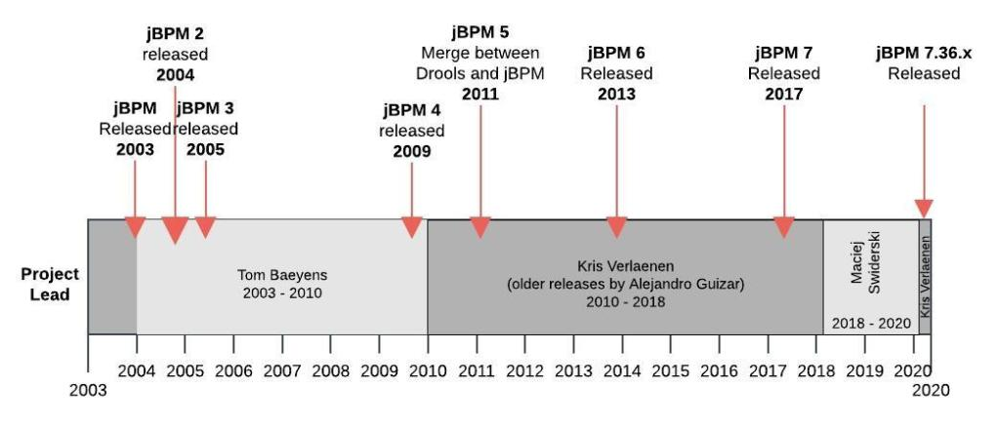
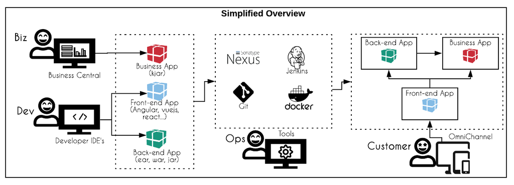

Know jBPM: your open-source business automation tool
Introduction: all flavors of open-source business automation
With the reading of the previous posts, the fundamental concepts should be cleared and you can now take the next step: choose an automation tool and start the architecture design and implementation of a business application.
Next are listed battle-tested solutions provided by KIE group and strengthened by Red Hat and customers who uses these tools in production in all over the world:
- Drools is the best option if your scenario revolves mostly around decision automation. This tool supports the implementation of rules in many different formats: decision tables via web tooling or Xls, guided decision tables, guided rules, pure drools code implementation and DMN. You can use diagrams of rule flows to better visualize or organize the groups of rules of a specific scenario. It is highly performant and used in a critical production environment, like for example, on an automated decision of airline traffic management.
- OptaPlanner is the one you should pick in case your need revolves around resource planning. Based on A.I. constraint solver algorithms. Some examples are the Vehicle Routing Problem, Employee Rostering, Maintenance Scheduling and many more.
- jBPM: a business automation tool that allows users to implement process management and case management through BPMN. It also includes the Drools engine and all its features in order to automate business decisions; Finally, it brings its users the power of business optimization through OptaPlanner.
- Kogito: is a community effort to use the best of jBPM, Drools and Optaplanner in order to provide cloud-first business automation. Kogito allows developers to use bpmn and dmn diagrams into Quarkus applications or Spring Boot applications. Based on these diagrams it can automatically generate domain-driven APIs and save developers time.
This introduction gives a glance at the projects backed by the KIE Group. The jBPM getting started series, focus on process-driven application with jBPM and eventually mentions Kogito.
jBPM Overview
jBPM offers a complete authoring, execution, management and monitoring environment to support the full lifecycle of business automation projects. It is nurtured with open-source culture; in other words, its source code is exposed and open to visualization and contribution from people from the community who wants to aggregate to the project.
A key existing feature in jBPM is provided by Drools project: the possibility to implement business rules validation. It is possible to develop traditional rules and even to implement complex event processing (CEP) scenarios to work with use cases like fraud detection. CEP is the possibility to match facts against events based on real-time processing.
jBPM also includes a project to address resource planning use cases. Optaplanner is a tool which addresses use cases like “I have six trucks and twenty places to deliver my products. Is that enough?”, “What is the most economical path to drive considering this number of trucks, destination, and gas price?”, “ What best way can I create my school agenda considering these teachers in staff and these subjects?” and similar scenarios.
Deliver complex, maintainable, and continuously improving business scenarios by combining the power of the triple crown (BPMN, CMMN and DMN) with the effective microservices and cloud architecture concepts.
Origins
In 2004, jBPM appeared dressed up in a Business Process Management Suite (BPMS) style. This community project was created and lead by Tom Baeyens. Later on, Kris Verlaenen assumed the lead, followed by Maciej Swiderski. In 2020, Kris Verlaenen got back the leadership of jBPM community.

This diagram shows the history of jBPM along with the community leadership. By the time this post was made, Kris Verlaenen is the current lead, and jBPM 7.36.0 is the most recent stable version. jBPM versions are released monthly.During its existence jBPM had a notable technical evolution. It keeps up not only to the always growing market needs and also to recent technology strategies, like for example, microservices architectures, event-driven architectures and cloud environments.
jBPM evolved into a bigger concept than a Business Process Management Suite (BPMS), therefore, Red Hat changed the name of the enterprise product from Red Hat BPMS to Red Hat Process Automation Manager (RHPAM), and Red Hat JBoss BRMS, to Red Hat Decision Manager (RHDM). It is important to mention that the enterprise product is the same open-source upstream jBPM project.
This tool is a proven mature battle-tested Business Automation project. It is the heart of digital transformation successfully achieved by big known organizations that lead the market in different vertical industry sectors.
Components
jBPM is composed of two main components, Business Central and Kie Server. Business Central is a web-based tool that is used as a development IDE, process and tasks execution management, and monitoring (BAM). Kie Server, is a decision engine, problem-solver, and workflow engine which is a secure, lightweight, scalable, and cloud-ready.
While Business Central is responsible for the creation and monitoring of business applications, Kie Server is the engine which executes them.
This business automation tool provides flexibility on application runtime. The architect can choose between three runtime execution modes to run business applications:
- as independent services on top of application server platforms like, for example, WildFly and other Java EE Application Servers;
- as a standalone Java program;
- as embeddable and executable uber jar format by using Spring Boot or Thorntail;
It can run in Docker containers in any of these modes.
Business Central is used for authoring, management, and monitoring of business assets. In the development phase, this web tool can be used by developers, business analysts, and business automation specialists to create projects, models, processes, cases, and rules.
When creating projects, the interface allows, in a low-code manner, the creation of data models, task forms, processes, and rules. When using this development strategy, both Business Central and developers IDE’s will version the assets on git repository and artifacts repository.
Kie Server is an engine written in pure Java, responsible for executing the deployments of the business applications (kjars). Kie Server, in the enterprise version, is also named Intelligent Process Server, or Decision Server. It integrates to external services via REST or JMS. This is the lightweight cloud-native engine we will use to deliver critical business applications, using BizDevOps culture. Check this development and delivery pipeline model:

Aligning the domain knowledge with the notions presented about the business automation tool, you now started to understand the tooling involved into a design and execution of a business application environment for the different personas involved in the project.This blog post is part of the second section of the jBPM Getting started series: Digital Tranformation Journey.